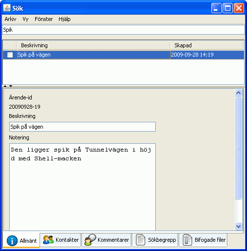

I fönstret Sök kan du söka blan alla ärenden som fins innom de Ärendetyper som du är knuten till. Skriv in vad du vill söka efter i fältet längst upp och tryck på Retur. Fliken Allmänt visas som standard men du kan visa information om Kontakter m.m. genom att klicka på Flikarna längst ned.
